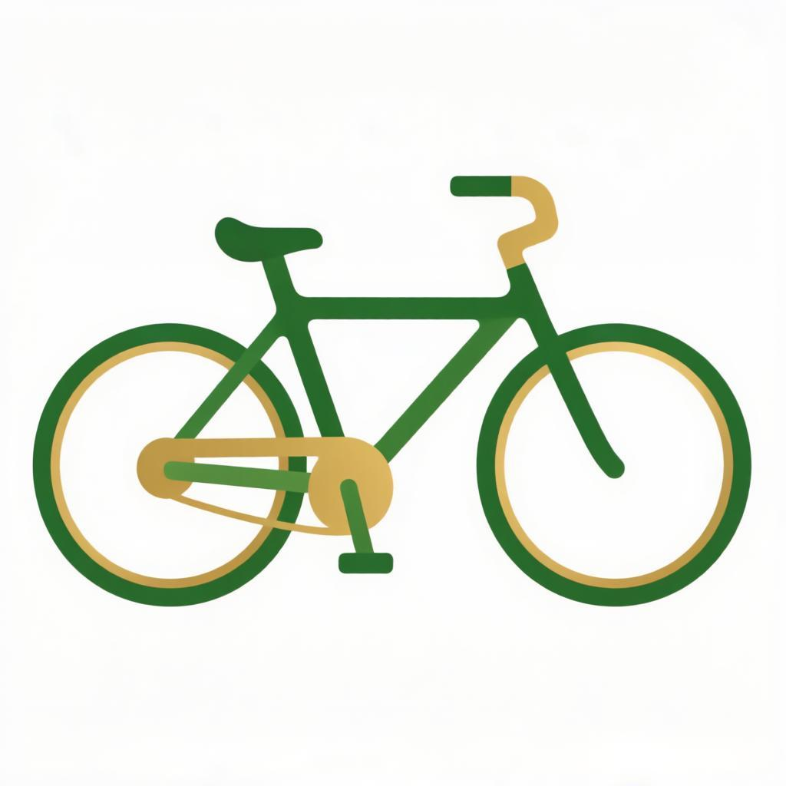

Курьер Яндекс ЕдыИдеальная подработка для студентов и всех от 18 до 30 лет: свободный график, ежедневные выплаты и работа рядом с домом. Без опыта — всему обучим. Оставь заявку — и уже завтра выйдешь на первый заказ.
Оставить заявку →Работай сколько хочешь — хоть 2 часа, хоть весь день
Заработок начисляется ежедневно, снять можно в любой момент
Выбирай район, где удобно работать именно тебе
Пешком, на велосипеде, самокате, мотоцикле или авто
Нажми кнопку и заполни короткую форму
Подтверди документы — это занимает меньше дня
Скачай приложение курьера и принимай заказы
Набор открыт в крупных городах — оставь заявку, работай рядом с домом
Не нашли свой город? Всё равно оставляйте заявку — Яндекс Еда постоянно расширяет зону набора
Да, это идеальная подработка для студентов от 18 лет — свободный график позволяет совмещать с учёбой.
Оставьте заявку, подтвердите документы и скачайте приложение курьера. Всему научат за один день, опыт не нужен.
Выплаты ежедневные — заработанное можно снять в любой удобный момент.
Пешком, на велосипеде, самокате, мотоцикле или автомобиле — вы выбираете сами.